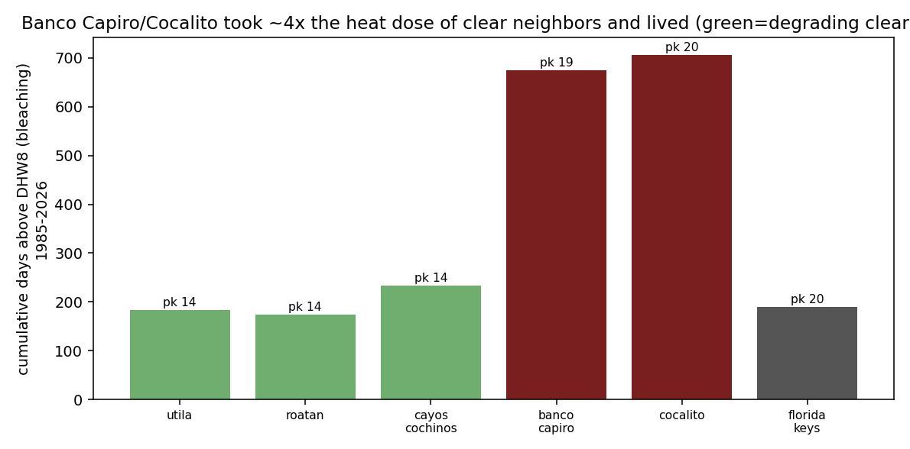
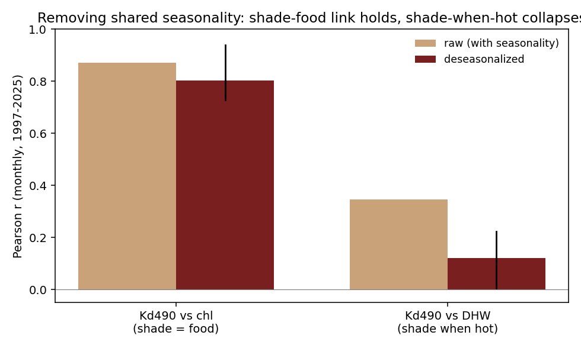
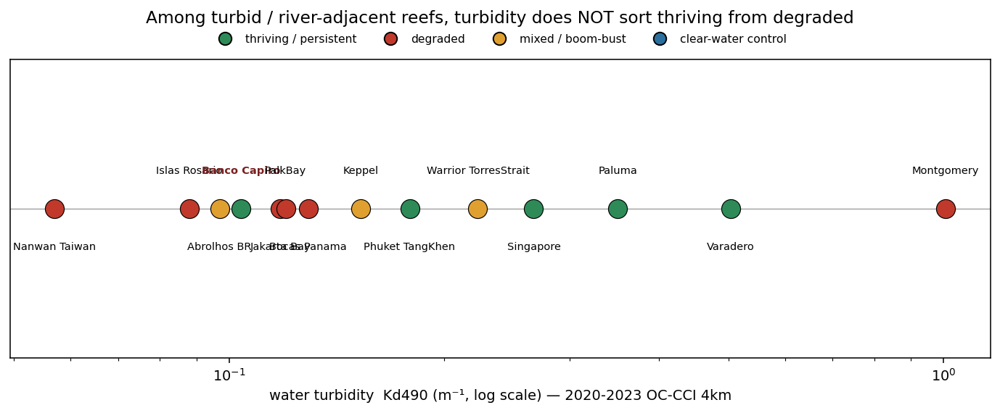
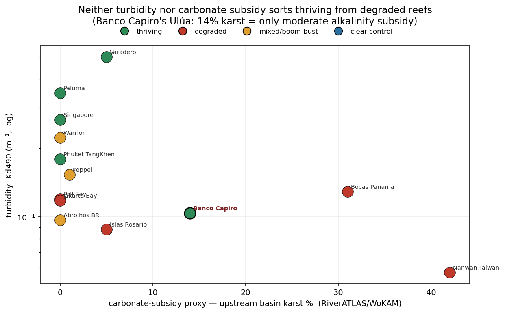
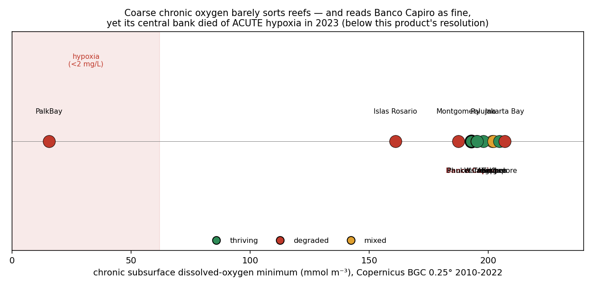
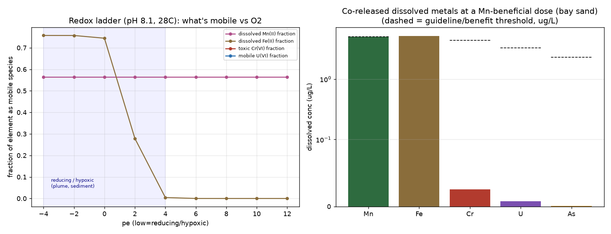
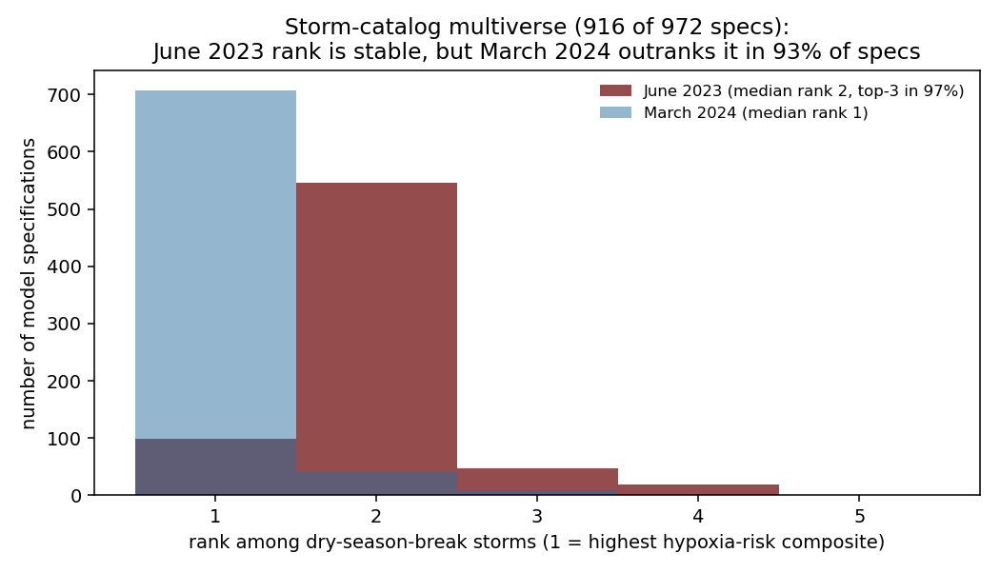
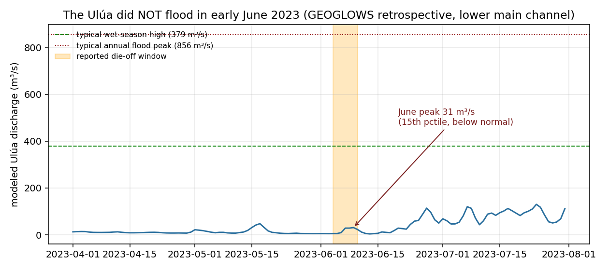
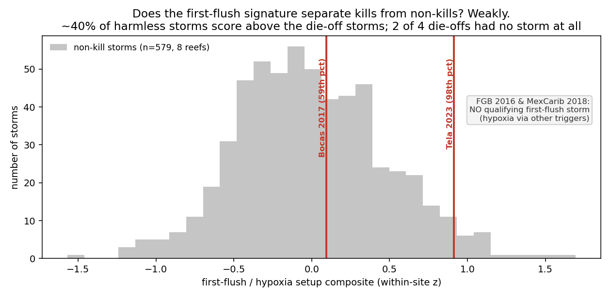

How we tested the mystery
We rebuilt Banco Capiro's situation from first principles, established physics, chemistry and ecology applied to real satellite and ocean-model data, rather than assuming an answer. Six models. Every term is defined in the glossary; every claim is cited below. New to this? Each section has an In plain terms box.
Terms used throughout: SST (sea-surface temperature), DHW (Degree Heating Weeks, accumulated heat stress; >4 = bleaching likely, >8 = severe with mortality)8, Kd490 (how fast light dims with depth = water clarity), Ωarag (aragonite saturation, how easily coral builds skeleton). All defined in the glossary.
The dying reefs 30-60 km away sit in the same regional ocean as Banco Capiro. So we treated the region as a natural experiment: if the healthy reef and the sick reefs share the same water temperature, the thing that saves it must be local. Each model tests one candidate.
1 · Herbivory, why "few fish" isn't fatal here
Question: healthy reefs need grazers to keep seaweed (macroalgae) off the coral. Banco Capiro has low reef-fish biomass. So why hasn't seaweed taken over?
dC/dt = rTC − dC − aMC, dM/dt = aMC − gM/(M+T) + γMT,
with grazing g = g_fish + g_urchin. We found the grazing tipping point and tested where Banco Capiro
lands with vs without its urchins.
Result: the system is bistable with a collapse threshold near g ≈ 0.19. Low
fish grazing alone falls below it → the model flips the reef to seaweed. Restore the measured
Diadema urchin grazing (this reef held them at ~155 per 100 m² in 2014, vs 2.5 at degraded Utila15)
→ stable high-coral state. Remove the urchins in a counterfactual → collapse.
Then the counterfactual happened in the field. A Caribbean-wide pathogen16 crashed Banco Capiro's Diadema ~88% in 2022, and by the next survey macroalgae had risen ~193% and hard coral fallen ~31%15. This real loss of grazing followed by coral decline is strong field evidence that herbivory was holding the reef together, and the reason its status is now "high but declining," not "thriving." Our model is calibrated to this sequence, not independently validated by it: with only two time points it cannot yet be a formal attribution (see the honest-limits note below).
Seaweed and coral compete. Something has to mow the seaweed. Fish usually do it; here the fish are scarce, but a huge population of spiny sea urchins does the mowing instead. Take the urchins away and the model says the reef would drown in seaweed.
2 · Thermal stress, it is not a cool refuge
Question: is Banco Capiro simply cooler, or less heat-stressed, than its neighbors?
Result: there is no evidence of lower regional thermal exposure. Banco Capiro's Maximum Monthly Mean (29.80 °C) sits within 0.27 °C of its degrading neighbours (29.53–29.72 °C), a spread far smaller than the reef's own year-to-year variation in peak heat, so on the satellite record it is not measurably cooler. If anything it runs hotter by the dose that matters: its cumulative days above the bleaching threshold (675) and peak heat (DHW ≈ 19 in 2023) exceed every clear-water neighbour (which sat at ~14) and rival the Florida Keys, where reefs died. This is a single-satellite-pixel comparison, so it rules out a regional surface-cool refuge, not depth-specific cooling or high-frequency temperature swings (those need loggers in the water). Temperature alone does not explain why it was healthy. (The reef did suffer mass mortality in 2023, but the field team reports the killing event was an abrupt ~5-day event in early June, months before the October heat peak, see §7. Not a simple heat kill.)

It didn't get lucky with cooler water. It felt the same brutal heat as the reefs that are dying, a dose strong enough to kill most reefs, and lived anyway. That's the core of the mystery, and it points the finger at something local, not the weather.
3 · The water itself, murkier and richer (satellite)
Question: how different is Banco Capiro's water, measurably?
Kd490 (water clarity) and
chlorophyll-a (plankton / nutrient proxy), via NOAA CoastWatch ERDDAP. Compared Tela reefs to
the clear-water reefs.
Result: Banco Capiro is 2.5× more turbid and 4.2× more chlorophyll-rich than the clear reefs (Cocalito 2.8× / 5.2×). The "murky, nutrient-loaded bay" is real and quantified. This reframes the pollution as a possible asset, not just a threat.14
Satellites confirm the bay is genuinely dirtier and greener than the pretty reefs nearby. Normally that's bad news. Here it may be doing two useful things at once, shading the coral and feeding it (next two sections).
4 · Turbidity as sunscreen (light × heat)
Question: can the murk shade the coral enough to blunt the heat stress?
light(z) = light₀·e^(−Kd·z)) we compared light reaching the
coral at Banco Capiro vs a clear reef, and formed a light-weighted effective heat dose.
Result: at the measured clarity, the murk gives the deep bank real optical relief (at 20 m the turbid reef receives roughly half the light-plus-heat dose of a clear reef) but shallow corals get little shade. We report this as a light-transmission contrast by depth, not as a physiological "effective heat dose", a construct we've withdrawn as unjustified. Two honest corrections came out of a 2026 self-review (below): (1) the earlier claim that shading is "strongest exactly when heat peaks" does not survive removing the seasonal cycle, within-season the turbidity–heat correlation falls from 0.35 to ~0.12, so turbidity is a baseline property of the bay, not a heat-synchronised shield; (2) the 2023 mortality ran opposite to the depth prediction. If deep shade protected coral, the deep bank should have fared best. Instead the deep central bank (to ~30 m) collapsed to under 1% cover while the shallower Cocalito patch held ~68%. So turbidity shading is a genuine physical effect and a testable prediction, but it did not decide which corals lived in 2023, that came down to biology (stand structure, symbionts, grazing) or a locally acute trigger on the deep bank.
Cloudy water is like sunscreen, but only for the deeper coral, and only as a steady background, not a shield that switches on when it's hot. And here's the twist: in the 2023 die-off it was the deep, best-shaded coral that died, while the shallow, less-shaded coral lived. So the murk helps in theory, but it isn't what saved the survivors, which is why the "tougher biology" ideas still matter.

And does turbidity explain persistence at all? Across the world's turbid reefs, no. We placed Banco Capiro against 15 other turbid, river-adjacent reef systems worldwide, measuring each one's water clarity (satellite Kd490, 2020–2023). Turbidity does not sort the thriving reefs from the degraded ones: healthy, persistent reefs span from Banco Capiro's modest 0.10 up to Varadero, Colombia at 0.50 (five times murkier, ~80% cover), while degraded reefs run from the clearest site in the set (Nanwan, Taiwan, 0.06) to the muddiest (Montgomery Reef, Australia, 1.0). Banco Capiro is only the fourth-clearest of the set, so it isn't even especially turbid in global terms. The lesson is the same as the within-bay one: murk is context, not the thing that saves a reef. What decides a turbid reef's fate lies in factors these coarse geomorphic measures miss, biology and management and the reactive chemistry we have not mapped across sites, above all the dissolved-oxygen regime. Bear that last point in mind: an acute low-oxygen excursion is exactly what killed Banco Capiro's central bank in 2023, so chemistry is anything but irrelevant here (see below).

Checking the 2024 monitoring data turned up an error in our own work. Cocalito sits at 15.9118, -87.6171, in the western bay beside Punta Sal, confirmed by the Healthy Reefs site register, by the published coordinates of the 2026 growth-anomalies study, and by the reef's description as lying at the western end of the bay. Every "Cocalito" number in our work was sampled at 15.94, -87.55, about 7 km northeast of the real site, which is one 5 km pixel over. Separately, our "Banco Capiro" point (15.90, -87.48) sits about 4 km northeast of the bank's actual survey stations near 15.864, -87.50, also about one pixel. Both labels were displaced in the same direction, offshore and to the northeast.
We re-pulled the same 5 km heat product at the true position and at both legacy ones. The correction moves the numbers slightly, and it moves them against our earlier understatement:
| position | 5 km pixel | peak DHW 2023 | peak DHW 2024 | days above DHW 8, 2015-2025 |
|---|---|---|---|---|
| Cocalito, true (15.9118, -87.6171) | 15.925, -87.625 | 19.84 | 20.44 | 676 |
| our "Cocalito" point (15.94, -87.55) | 15.925, -87.575 | 19.49 | 19.95 | 640 |
| our "Banco Capiro" point (15.90, -87.48) | 15.875, -87.475 | 18.81 | 19.30 | 610 |
| Punta Sal, 84.3% cover | 15.925, -87.625 | 19.84 | 20.44 | 676 |
| Canyon, Banco Capiro, 0.3% cover | 15.875, -87.525 | 19.39 | 19.88 | 645 |
Three things follow. First, the displacement is about one pixel, so the thermal error is modest, roughly 0.3 to 0.6 DHW, and it runs in the direction of understating the heat at the surviving reef. The central observation is strengthened, not weakened. Second, and more useful: across 15 km of one bay the heat dose is effectively flat, 18.8 to 19.8 peak DHW and 610 to 676 days above the threshold, and the site that died (Canyon, 0.3% cover) recorded slightly less heat than the site that lived (Cocalito, 68.2%). Whatever separates them is not in the satellite thermal record, and Cocalito and Punta Sal are not even separable from each other, since they share a pixel. Third, a caution that applies to everything on this page: at 4 km ocean-colour resolution and in a bay this size, a one-pixel error is the difference between sampling a reef and sampling the water next to it, so our optical comparisons between named sites inside Tela Bay should be read as bay-scale, not site-scale.
Ground truth from inside the bay now says the same thing, and more sharply. Divers who work both reefs describe La Ensenada, the inshore reef about 7 km from Banco Capiro, as "like soup," and Banco Capiro as distinctly less sedimenty (pers. comm., Aug 2026). Yet Banco Capiro carries roughly 50-60% coral while La Ensenada carries 10-15% coral and about 30% macroalgae, on sediment-adapted hardy species. Within a single bay, then, the murkier reef is the poorer one. That is the opposite of a turbidity-umbrella story and it agrees with the 16-reef result above. It also sharpens the depth problem we flag throughout: the surviving inshore reef is the shallow one (5-10 m, crest as shallow as 2 m), while the deeper Banco Capiro stations that our shading model predicted would be best protected are the ones that died in 2023. Depth and turbidity, our two physical candidates, both run the wrong way inside Tela Bay.
5 · Pollution as food + carbonate chemistry
Question: do the river and sewage help or harm the reef's ability to grow?
Ω_arag responds, high if the river is limestone/karst-fed (alkalinity subsidy), low if eutrophic runoff dominates14.
Result: a limestone-fed river keeps Ω_arag ≈ 4 (good for building skeleton) even
with dilution; eutrophic runoff drags it down. The deciding measurement is still the river's alkalinity : DIC
ratio, a field ask for the expedition. But we could now check how limestone-fed the Ulúa actually is. We
mapped the geology of its whole basin (RiverATLAS / world karst map): the Ulúa catchment is ~14% karst
(dissolving limestone), which is a moderate alkalinity subsidy, not the strong one the optimistic branch
assumed. So the carbonate boost is probably real but modest, and the strong-subsidy scenario is the less likely
one.
And does carbonate subsidy explain persistence anywhere? No. We ran the same basin-geology check across all 16 turbid reefs and placed it against turbidity. Neither axis sorts the thriving reefs from the degraded ones. The most limestone-fed rivers in the set (Bocas del Toro, 31% karst; Nanwan, Taiwan, 42%) feed degraded reefs, while several thriving reefs have almost no karst at all. Banco Capiro sits in the middle on both axes. Like turbidity, an alkalinity subsidy is at most a helpful background, not the thing that decides a reef's fate.

These corals can eat the plankton the pollution grows, so nutrients that starve-then-kill a clean reef may feed this one. The muddy Ulúa does carry some dissolved limestone (about 14% of its basin is limestone country), which hands the coral a little raw material to build skeleton, but only a modest amount, and reefs fed by far more limestone are dying anyway. So this helps at the margin; it isn't the secret.
5b · The chemistry that actually bites: oxygen (and why coarse data misses it)
Ruling out three geomorphic knobs (how murky, how big the river, how limestone-rich the basin) does not mean chemistry is irrelevant, and it would be a mistake to say so. The single most decisive chemistry event in this whole story is a chemistry event: the acute loss of dissolved oxygen that killed Banco Capiro's central bank in 2023 (§7). So we tested oxygen and nutrients directly across the 16 reefs, using a global ocean-chemistry reanalysis.
Two things came out, and they cut in opposite directions, honestly. First, where this coarse product can see a chemistry problem, it lines up with degradation: Palk Bay (India) shows chronic subsurface oxygen crashing to hypoxic levels and is degraded; Jakarta Bay shows extreme nutrient enrichment (phosphate ~7× the others) and is degraded. So chemistry clearly matters where it is severe. Second, and this is the catch: the reanalysis reads Banco Capiro as perfectly well-oxygenated, right in the healthy pack, even though its reef demonstrably died of acute oxygen loss. The reason is resolution: a 27 km monthly grid cannot see a five-day, bay-scale, sub-surface oxygen crash. The chemistry that mattered most here is exactly the chemistry these products cannot resolve.

None of the coarse, chronic, physical measures we can map from space, turbidity, river size, basin geology, or even regional oxygen and nutrients, sorts the thriving turbid reefs from the dying ones. That says the answer lies in what these measures miss: local biology (herbivory, symbionts), management (fishing, protection), and reactive, often acute chemistry, above all episodic hypoxia, that plays out at scales of metres and days. Chemistry is not ruled out. If anything, the one reef here that died did so by chemistry. What is ruled out is explaining any of it from the coarse physical setting alone.
6 · Currents & upwelling, two "escapes" ruled out (ocean model)
Question: do currents steer the river's mud away from the reef, or does cool deep water well up to protect it?
Result: the plume is not diverted, ~53% of particles reach the reef, but they flush through in ~4 days (short residence). And there is no cool subsurface pool or upwelling; the coast is downwelling-favorable. Honest limit: at 1/12° (~8 km) the bay is only ~2-3 cells, so this captures regional transport, not fine sub-bay flow.
Two tempting explanations both failed: the mud isn't steered around the reef (it arrives, but washes through fast, so the reef gets shade without being buried), and there's no hidden cold current. Ruling things out is how you find the real answer.
What we've ruled out
| Ruled out | Why |
|---|---|
| It's cooler here | Same regional SST as the degrading reefs; hit DHW 14 in 2023 and lived (§2) |
| Currents divert the river | Plume reaches the reef but flushes in ~4 days, shade without smothering (§6) |
| Deep upwelling cools it | No cool subsurface pool; coast is downwelling-favorable (§6) |
Three physical escapes gone. What remains is local biology and optics, shading, feeding, grazing, and likely a heat-tolerant symbiont6,7, the one piece needing genetics. That's what the expedition measures.
How this fits the wider science (and what's actually new)
Being honest about prior work is part of the method. The individual mechanisms here are not new discoveries, they are established in the turbid- and marginal-reef literature17: turbidity shading3,4, heterotrophic feeding5, heat-tolerant symbionts6,7, and herbivory1. And the turbidity-as-refuge idea is actively contested: on Atlantic marginal reefs, when a heatwave coincided with a drop in turbidity, 91% of colonies bleached18. Nor is Banco Capiro unique, Cordelia Bank off Roatán carries even higher cover.
So what would move the science forward is not "we found why it's healthy." It is three things this work can uniquely offer:
| Contribution | Why it's new for this reef |
|---|---|
| Integrated multi-driver attribution | A single quantitative budget combining optics + thermal + hydrodynamics + carbonate + herbivory, validated against the 2014-2022 time series. No one has integrated the drivers for Banco Capiro. |
| Physical ruling-out | Same regional SST, no upwelling, and a river plume that reaches the reef but flushes in ~4 days, new physical characterization of the bay (satellite + ocean model). |
| Predictive vulnerability | Combining the herbivory collapse with turbidity-dependence and heat to predict when the reef is at risk (heatwave + clear-water spell + urchin loss). Forward-looking and management-relevant. |
Turning this into a peer-reviewed contribution needs in-situ validation from the expedition and collaboration with the teams that hold the long-term data (Operation Wallacea) and the symbiont work. See Data & Researchers.
The corrected analysis (what survived our own red-team)
We ran a hostile internal review of the first version of this model. It found that the original "same heat, opposite fate" result was an artifact of hand-picked parameters, so we rebuilt the test properly: a controlled 2×2 factorial from a common baseline (toggle urchins, toggle the 2023 heat, one factor at a time), a Monte Carlo over the uncertain parameters, keeping only parameter sets consistent with the reef being healthy in 2014. The full review and the code are public in the repository.
We did this again, harder, in July 2026: two independent frontier AI models were run as hostile peer reviewers over the entire project, and their findings drove a second round of corrections now reflected across these pages, the thermal claim reworded to what the satellite actually shows (§2), the turbidity "shade when hot" claim dropped and the depth-vs-survival contradiction surfaced (§4), the June-2023 first flush demoted to a candidate after the river was shown not to have flooded (§7, §10), and the coarse ocean-model oxygen field labelled as model output rather than measured reef oxygen. The point of publishing a reef mystery is to be right, not to be tidy.
The result is more honest and more interesting. The acute claim, that losing urchins makes the heat kill more coral outright, did not survive. But the recovery effect did: a reef that still has its grazers bleaches and then recovers, while a reef that has lost them gets overgrown by seaweed in the space the heat opened, and keeps declining. This is the classic grazing-enables-recovery mechanism, robust for reefs near their tipping point (a synergy in 98% of those parameter sets).

So the defensible claim is narrow and testable: if Banco Capiro sat near its herbivory tipping point, the 2022 urchin loss removed its ability to recover from the 2023 heat. How close it was is exactly what the expedition and the full Operation Wallacea time series can settle. Magnitudes are not yet fitted to data. What is solid regardless: the herbivory mechanism (from the field data), the not-a-cool-refuge result, and the satellite optics.
7 · The 2023 die-off: oxygen is the best-supported reading, and it is contested
There are really two questions here, and it is worth keeping them apart, because we can answer the first with some confidence and not the second. (1) What kind of event was it? and (2) what set it off?
(1) The clearest read: the reef suffocated. In early June 2023, over about five days, divers watched a milky-white substance roughly a foot and a half thick settle and hover over the coral, and then many species died at once, months before the year's heat peak and during the dry season. The scientist who documented it (Juli Berwald, Tela Coral) ruled out ordinary bleaching and disease by eye. That specific picture, a dense layer that sinks onto the reef and kills many species in days, is the signature of an acute loss of oxygen, a smothering layer of sulfur-oxidizing bacteria and oxygen-starved water. It has a well-documented regional twin: the 2017 Bocas del Toro "dead zone" in the same Caribbean sea. This rests on one eyewitness account with no water ever sampled, so it is a strong inference, not a proven fact.
We previously called this "not a close call." That was too strong. A second research group that has surveyed these reefs for over a decade regards the milky-plume account as unverified hearsay and will not publish it (pers. comm., Aug 2026). A third party, the regional monitoring network, describes 2023 at Tela as bleaching plus stony coral tissue loss disease, which is precisely what the eyewitness ruled out. Three groups who were there tell three different versions, and that disagreement is itself a finding.
What survives independent of the plume is the speed. The same programme that doubts the plume independently describes the 2023 progression from white, to dead, to turf-colonised as very fast, where that sequence normally takes weeks. Rapid multi-species death remains hard to reconcile with ordinary bleaching. But a genuine counterweight has to be stated too: coastal water was measured at 34 °C after the event, which is lethal in its own right, so a thermal pathway cannot be excluded. We now hold "acute oxygen loss" as the best-supported single reading of a contested event, not as settled.
Bleaching turns coral white in place while the water stays clear, and it tracks the heat peak (here, October, not June). Disease (SCTLD) advances as lesions over weeks and favours particular species, not a five-day, many-species die-off. A chemical spill struggles to explain a dense biological layer that sinks, and vessel-tracking found no dumping. None of these matches the sinking-milky-layer, days-long, many-species picture the way oxygen loss does. They are possible but poorer fits, not equal contenders.
(2) The genuinely open question: what made the oxygen crash? An oxygen collapse needs a trigger, and this is where our analyses landed, and where the honest answer is "not yet known." What we could do is rule some triggers out and narrow the rest:
| Trigger | Status | Why |
|---|---|---|
| Local first-flush runoff — a small rain slug of oxygen-hungry runoff off the immediate coast after a dry spell | Plausible, narrowed | A convective storm on June 5–6 is confirmed, but the antecedent was only moderately dry (33rd percentile) and the Ulúa did not flood, so any first flush was local, not a river event |
| Sulfide / anoxic bolus — a pocket of low-oxygen, sulfide-rich water moving onto the reef | Open, untested | Fits the sinking layer and the deep-bank-hit-hardest pattern; no oxygen or sulfide data exist to confirm it |
| Warm, calm, stratified water — the enabling background rather than the trigger itself | Present | June was warm and stratified, but so were many months that killed nothing; it sets the stage, it doesn't pull the trigger |
| River flood / freshwater lens | Ruled out | The Ulúa ran below normal (31 m³/s, 15th percentile) — no flood to build a lens |
| Vessel dumping | Ruled out (AIS) | No loitering, dark-gap or encounter events in the vessel record (with the caveat that AIS misses small craft) |
Why we can't just look it up. Daily satellite imagery over the exact early-June window shows no surface plume, which is expected: the substance sank and sat on the reef (surface sensors can't see a subsurface layer) and early June was heavily clouded. So satellites can neither confirm nor deny it. The evidence that could settle both the event and its trigger is physical: the coral cores a researcher collected in 2025, which may hold a chemical fingerprint of a low-oxygen pulse, and in-water oxygen sensors deployed before the next such storm. (One loose thread: the urchin-loss surveys came weeks later, so whether the urchin decline was a cause or an effect of this event is still unresolved, and needs the exact survey dates.)
8 · The black sand, chemistry and a redox model (new, unpublished)
Question: the bay's sediment includes a striking black, layered sand. Could its chemistry be part of why this reef stays healthy, or, tried as a treatment, help sick coral?
What the modeling found: (a) Under low oxygen the sand's manganese and iron oxides reductively dissolve, releasing bioavailable Mn²⁺ (and Fe²⁺). So a hypoxic event like June 2023 would itself mobilize the sand's manganese, the chemistry and the die-off hypothesis connect. (b) Titanium is inert in water at all conditions; any effect is surface photocatalysis in sunlight, not dissolution. (c) At a manganese-beneficial dose, the toxic heavy metals (chromium, uranium, thorium, arsenic) release in negligible amounts, because they are locked in refractory minerals (chromite, monazite, zircon); lead was not detected at all. This meaningfully de-risks the poisoning concern for any treatment use.

Iron is the wildcard. Manganese benefits corals (a cofactor in their heat-stress antioxidant defense, Biscéré et al. 2018), but iron can worsen bleaching at low doses. The bay sand delivers both, which is likely why the team's treatment trials helped at some doses and harmed at others. The lagoon sand, with the same manganese and titanium but no iron, is the cleaner candidate to test first, and bay-versus-lagoon is a natural experiment on the iron effect.
9 · White water before a reef dies, the documented precedents
Tela's June-2023 event, a milky white layer over the coral followed by sudden death, is not unprecedented. Several reef mass-mortalities worldwide have been preceded or accompanied by white, milky, or cloudy water, and wherever it was actually studied, the cause was the same: a sudden loss of oxygen. This is the literature that makes the acute-hypoxia hypothesis for Tela credible rather than speculative.
| Event | What was seen | Confirmed cause |
|---|---|---|
| East Flower Garden Bank, Gulf of Mexico, 2016 | White bacterial mats over corals and hazy green water; ~50% mortality in affected patches20 | Localized hypoxia (dissolved O₂ < 2 mg/L) from freshwater runoff + upwelling, confirmed by water chemistry and microbial data19,21 |
| Bocas del Toro, Panama, 2017 (+ Caribbean-wide) | Murky, foul-smelling water; ~90% coral loss in affected areas; animals fleeing a sub-surface layer | Stratification + nutrient loading → hypoxic "dead zone" (no upwelling needed). Such events are underreported by roughly an order of magnitude22 |
| Benguela (Namibia) & Peru upwelling, recurring | Milky turquoise / white surface plumes, visible from space, co-occurring with fish and benthic mass mortality | Upwelling-driven seafloor anoxia releases hydrogen sulfide (H₂S), which oxidizes to colloidal white sulfur23,24 |
The common thread: milky or white water over a reef is a recognized signature of an acute low-oxygen (or sulfide) event. That is exactly what Tela's divers described in June 2023, on a reef with no instruments to catch it. The precedents don't prove what happened at Tela, but they show the hypothesis is grounded in documented, peer-reviewed cases, not imagination.
What is the white material actually made of? It is not one substance, and at Tela it was never sampled, so for our event the honest answer is: unknown. But where cases like these have been sampled, the white material is a mixture the low-oxygen conditions themselves create, spanning categories rather than fitting one: mats of sulfur-oxidizing bacteria (living cells packed with white granules of elemental sulfur, part biomass, part mineral), colloidal elemental sulfur precipitated when hydrogen sulfide (H₂S) gas meets oxygen (inorganic), and coral mucus and decaying tissue with opportunistic bacteria feeding on it (organic). Two clues point Tela toward the sulfur-and-bacteria end: the divers likened it to "thick white mats of bacteria," and it sank and hovered over the coral rather than floating, which fits a dense layer at the oxygen-sulfide boundary, not a surface film or a suspended mineral "whiting." If it ever recurs, a single jar would settle it, a drop under a microscope, an H₂S test strip, and a burn test tell bacteria, sulfur, and carbonate apart in minutes.
In the handful of other reefs where a sudden milky-white die-off was investigated, the culprit turned out to be water that briefly ran out of oxygen. Tela's description is consistent with that, which is why it is the best-fitting idea, but Tela was never sampled, so it stays a resemblance, not a diagnosis.
10 · The June 2023 investigation, quantified
We put the June event through a purpose-built multi-decade, multi-site dataset (six reefs, daily SST, turbidity, chlorophyll, dissolved oxygen, nutrients, rainfall and wind, 1990-2026) and asked three questions with data. Full methodology and datasets are on the Methods & Data page.
Was it a rare kind of storm? Yes, and that ranking is robust. Across 34 years there have been only about 10 dry-season-break storms at Tela (a rain pulse breaking a dry antecedent). Ranked by a hypoxia-risk composite, June 2023 ranks #2. To check that the "#2" wasn't an artifact of our thresholds, we re-ran the whole catalog under 972 different specifications (every reasonable choice of pulse size, dry-spell window, season and weighting): June 2023 lands in the top three in 97% of them. So its rank is stable. The honest caveats: the coarse (~27 km) ocean-reanalysis oxygen field shows a regional dip afterward, but that is model output, not measured reef oxygen, and it cannot resolve a bay-scale event. And the #1-ranked storm was March 2024, an even more extreme setup that outranks June in 93% of specifications, which made "was the reef also hit in March 2024?" our sharpest test: if it wasn't, then a storm like this is not enough on its own to kill the reef.
Update, August 2026: that test turned out to be unavailable, and we are reporting it as a loss rather than quietly dropping it. The monitoring programme that works these sites reports the reef was still largely dead through 2024 (pers. comm.), so a second mortality that spring would leave no detectable signal against the 2023 baseline. Their surveys also run June to August only, so nothing in the record brackets a March event. And 2024 carries the highest heat dose in our whole record (peak DHW 19.3 in October) alongside a regionally documented mass bleaching at Tela, so any 2024 mortality has a simpler explanation than a March storm. The storm hypothesis therefore stands where it stood, plausible and unconfirmed, but it has lost its cleanest route to being falsified. We have not replaced it with a weaker test that the hypothesis would pass.

Did the river actually flood? No, which cuts against the simplest version. We pulled the modeled Ulúa discharge (GEOGLOWS, 1940–2026) and found that in early June 2023 the river ran low, peaking near 31 m³/s (the 15th percentile, below normal for the date, and only ~8% of a typical wet-season high). Flow did rise about threefold off a very low dry-season base, a real but small local response. A trickle like that cannot build a strong freshwater lens or dump a sediment flood, so if a first flush hit the reef it came from local coastal runoff, not the main river. (GEOGLOWS is itself a model, so it can miss a very local cell, a real stream gauge would settle it.)

And the storm is confirmed by direct observations, not just models. Beyond the gridded rainfall products (which disagree on the exact total), three independent airport weather stations, La Ceiba (~65 km east), Roatán (offshore) and San Pedro Sula (inland), each recorded a thunderstorm sweeping the north coast the night of June 5-6, 2023, tracking from the Caribbean onto the coast and inland. La Ceiba's trace shows the classic downburst fingerprint: temperature crashing 28 to 23 °C in two hours, air going saturated, pressure jumping, and gusty winds. The stations don't record rain totals, so the magnitude still rests on the gridded products (which disagree, 11–62 mm), but the storm's existence, timing and convective character are now instrument-confirmed.

Was June the year's most extreme setup? No. The warm-plus-stratified "setup index" across 2023 peaked in October (the heat peak) and March, not June. So the ambient ocean state does not single out June, the one thing that distinguished the die-off week from the background was the rain pulse. That places the timing on an acute event rather than a slow build-up, but it does not establish that the storm caused the death, only that if a storm mattered, June was not otherwise remarkable.

Does it parallel other reef die-offs? Only partly. Running the same signature at three documented hypoxia die-offs (East Flower Garden Bank 2016, Bocas del Toro 2017, Mexican Caribbean 2018), none occurred at its year's setup peak, all were acute, locally triggered events. But the two confirmed freshwater-lens cases carry a salinity-drop fingerprint that the reanalysis does detect, and Tela shows no such fingerprint, either because its lens was too thin for the 9 km grid or because there was no freshwater lens at all. So Tela is at most a partial match, and the honest, product-independent conclusion is the negative one: these events live below the resolution of satellites and models, so confirming any of them needs sensors in the water.

Does the storm signature actually predict die-offs? We tested it against controls. A pattern that only ever gets applied to the one event it was built to explain proves nothing, so we ran the first-flush signature across 581 storms at eight reefs (the four documented die-off sites plus four monitored clear-water reefs) and checked whether it separates the kills from the harmless storms. It barely does. Tela's June 2023 storm was genuinely exceptional (98th percentile at Tela), but only two of the four documented die-offs even coincided with a first-flush storm: East Flower Garden Bank 2016 had none (its hypoxia came from a distant river flood plus upwelling) and the Mexican Caribbean 2018 event was decaying Sargassum, not a storm. And roughly 40% of harmless storms score as high as the die-off storms. So a first-flush storm is neither necessary nor sufficient for a reef die-off: Tela's storm is a credible trigger, but the pattern alone cannot make it the cause.

Was there a human hand? No AIS-visible sign, at any of the sites. We checked vessel-tracking records (Global Fishing Watch) for fishing, port traffic, loitering, ship-to-ship encounters and AIS "dark" gaps around each die-off. There is no anomalous vessel or dumping signal at Tela, Bocas or the Mexican Caribbean, and none that distinguishes Tela from the others. The honest caveat: satellite vessel-tracking barely covers these tropical coastal waters and misses small craft, so this rules out an AIS-visible dumping event but cannot exclude untracked activity.
Bottom line for this section. This whole investigation is about the trigger (question 2 in §7), not the event itself, which the eyewitness picture already points to oxygen loss. It establishes the setting of the June event, a rare dry-season storm on an unremarkable ocean background, no river flood, no vessel signature, an event too small and subsurface for satellites to see, and it rules specific triggers out (a river-flood lens, a dumping event). It does not pin down which trigger crashed the oxygen, and it is not meant to. What would: in-water dissolved-oxygen during such a storm, the 2025 coral cores, and the exact 2022/2023 survey dates. The March-2024 test we used to lead with here is no longer available (see above).
Was 2023 the first time? We asked, and the answer was no in the way that mattered least. We were told of an earlier report that the reef had been found "fully bleached" in 2019, and briefly wondered whether it was an early-summer event, which would have meant a repeat of whatever happened in June 2023. Mid-2019 carried no heat at all (June 1-10 DHW 0.11, zero days above the threshold on an independent product) and no qualifying storm, so an early-summer 2019 event would have had no explanation. The date settles it: the 2019 mass bleaching was in November, sitting on the year's heat peak (DHW 12.3 on 1 November, peak 13.0 on 25 October). That is textbook thermal bleaching and needs no special mechanism. Our recurrence idea is dead.
Profiling the whole 2019 season turned up something we had not looked for. Through the entire 2019 heat build, Tela's water was anomalously clear. Over August to November 2019, Kd490 ran 25% below its climatology and chlorophyll 36% below, and every month from June onward was negative. So the one year in which the reef's turbidity shade failed during the heat build is a year it bleached en masse, on a heat dose (DHW 13) only about two-thirds of 2023's and roughly half its duration above threshold.
Checked twice, because the coordinates were wrong when we first ran it. Re-running at the corrected Cocalito position with a different sensor and algorithm (MODIS, KD2M) gives the same answer and a larger one: August to November 2019 was 34% clearer than climatology at Cocalito and 30% clearer at the Banco Capiro site that died. The 2019 result is robust to both the position error and the choice of product. The 2023 and 2024 magnitudes are not. The two products agree those years were not anomalously clear, but they disagree substantially on how turbid they were, so we quote the 2019 anomaly and deliberately do not put a precise number on the others.
This is the episodic version of the sunscreen idea in §4, and it is the same signature we found on the Florida Keys, which clear when they get hot and died. It is consistent, not proven: 2024 carried the record heat dose with its turbidity intact and reportedly bleached anyway, so clear water is not necessary for bleaching here. The honest reading is that clarity plausibly explains why a moderate heat year was enough in 2019, not that turbidity is a reliable shield.
And it sharpens the contrast that matters. In 2019 the reef bleached at the heat peak, with its shade gone. In June 2023 it died months before the heat peak, with its turbidity at normal levels. Same reef, two events, opposite relationships to heat. A reef can bleach thermally in one year and die of something else in another, and Tela appears to have done both.
11 · The manganese angle, from diagnosis to a possible intervention
The black-sand chemistry (§8) pointed at one element with a real, published upside for corals: manganese. This section reviews that literature and asks the practical follow-on question, if a low, steady dose of manganese helps corals through heat, how would you actually source a slow-dissolving manganese material to test it at Tela? Both halves are early-stage; no one has yet field-tested a manganese amendment on a wild reef.
What the literature says about manganese and corals
A fast-growing body of work (2018 to 2026) shows that dissolved manganese at very low concentrations helps corals resist heat bleaching. Manganese is a cofactor in the coral symbiont's photosynthesis and in its antioxidant defense, so a small manganese subsidy blunts the oxidative damage that heat causes.
| Study | Finding |
|---|---|
| Biscéré et al. 2018 (Sci Rep) | Manganese at ~4 µg/L gave +30% chlorophyll and +69% photosynthesis; at 32 °C, manganese-treated coral did not bleach while controls did. (Same study: iron enrichment worsened bleaching, why the iron-free lagoon sand is the cleaner candidate.) |
| Montalbetti et al. 2021 (Front Mar Sci) | Manganese protects heat-stressed corals at the cellular level (lower stress-protein and lipid-damage markers). |
| Dorantes-Aranda et al. 2026 (PLOS Climate) | Manganese scavenges harmful oxygen radicals directly, and the symbionts build the protective oxide themselves from dissolved manganese, so a cheap soluble salt is all the input you need. |
| Förster et al. 2026 (Sci Rep) | The closest natural analog: volcanic ash that leaches manganese increased coral photosynthesis 1.4 to 2.6× under sediment stress, "sediment stress plus a trace-metal subsidy, delivered together" is exactly the black-sand-pulse picture. |
Wide safety margin. The beneficial dose (~0.5 to 15 µg/L, studies cluster near 5 µg/L) sits one to two orders of magnitude below the level where manganese becomes toxic to adult corals (~700 to 2,560 µg/L). And there is a reef-deployable delivery precedent: a manganese-alginate slow-release gel (Moreira & Ferrier-Pagès 2025) that releases ionic manganese over time.
How you would source a slow-dissolve manganese material at Tela
The useful surprise: you probably don't import anything. The two best options are both local.
| Source | Why | Main unknown / risk |
|---|---|---|
| The native iron-free lagoon black sand (on site, free) | It is the reef's own natural manganese-delivery mechanism, already here, no import and no cross-border permitting. The Los Micos lagoon variant carries the manganese and titanium but essentially no iron, avoiding the one element that can harm coral. Under low-oxygen conditions its manganese oxide dissolves and releases manganese slowly. | The dissolved-manganese release rate is unmeasured. A benchtop leach test (oxygen-rich vs oxygen-poor) would settle it, and is the single most useful next measurement. Assay the sand's trace metals first. |
| Agricultural-grade manganese sulfate (local farm-supply chain) | Tela and the lower Ulúa valley are banana and oil-palm country, and manganese sulfate is a standard crop micronutrient already moving through the regional agro-distributors. Cheap (a few dollars per kg of manganese), food/ag-safe, mature supply. Best delivered via the manganese-alginate slow-release gel. | Holding a stable low dose against reef water exchange is the real engineering problem. It ships as a regulated aquatic pollutant in bulk, though small research quantities are exempt. |
A raw manganese ore route was considered and set aside: Central America has little manganese ore, and raw ore brings heavy-metal contaminants and permitting friction for no advantage over the two local options.
Manganese is the one ingredient in the black sand with a real, published track record of helping corals through heat, at tiny doses, with a wide safety margin. The cheapest way to test that at Tela is the reef's own iron-free lagoon sand, with locally-bought agricultural manganese as the backup. The honest caveat: this has never been tried on a wild reef, so it is a careful pilot, not a cure.
The negative-results ledger (tracked for honesty)
Good science keeps score of what fails, not just what works. These are the hypotheses and tests that came back null, negative, inconclusive, or are still pending, tracked openly so the record stays straight.
| Question / hypothesis | What we found | Status |
|---|---|---|
| Is it a cooler / thermal refuge? | Same regional SST as the dying reefs; hit DHW ≈ 14 and lived (§2) | NULL |
| Does deep upwelling cool it? | No cool subsurface pool; coast is downwelling-favorable (§6) | NULL |
| Do currents divert the river plume? | Plume reaches the reef but flushes in ~4 days, shade without smothering (§6) | RULED OUT |
| "Same heat, opposite fate" (acute urchin × heat synergy) | An artifact of hand-picked parameters; killed by our own red-team. The narrower recovery-synergy survived | RETRACTED |
| Satellite evidence of the June-2023 white plume? | No surface signature, but the substance sank sub-surface and the sky was cloudy, so a surface satellite can't see it either way | INCONCLUSIVE |
| Was the die-off a ship-dumping event? | AIS over a 5-mile / 2-month window shows no loitering, no "dark" (AIS-off) events, and no vessel that re-flagged to Libya | NEGATIVE |
| Is there a dated diver photo of the event? | None exists publicly; the eyewitness accounts confirm no camera was rolling | NONE FOUND |
| In-situ nutrient time series for the bay? | Does not exist; the nearest monitoring program skips Tela | DATA GAP |
| Direct confirmation of hypoxia (coral cores)? | Cores were taken in 2025; analysis is potentially years away | PENDING |
| Was the reef hit in the more-extreme March 2024 setup? (our sharpest falsification test) | Unanswerable. The reef was still largely dead through 2024, so a second event leaves no signal; surveys run Jun–Aug only; and 2024 is the record heat year, which would confound any mortality anyway (Aug 2026) | TEST LOST |
| Was a June/July 2019 "fully bleached" report a second early-summer event? | Mid-2019 had no heat (Jun 1–10 DHW 0.11; DHW 4 not crossed until 6 Sep) and no dry-season-break storm. So either the report belongs to the Oct-2019 heat peak, or a second unexplained event exists. Date not yet confirmed | OPEN, UNRESOLVED |
| Is the milky-plume account corroborated? | No. A second long-running research group treats it as unverified and will not publish it; the regional monitoring network calls 2023 bleaching + SCTLD instead. Three accounts, three versions | CONTESTED |
How the trip closes the case, five measurement stations
Bleaching-vs-depth + water clarity
Most diagnostic. If shallow corals bleach more than deep in heat, turbidity shading is confirmed. Log light at 3/10/20 m at Banco Capiro and a clear reference reef.
Symbiont tissue samples
The one mechanism we can't compute. Tissue punches for Symbiodiniaceae typing, is heat-tolerant Durusdinium dominant? Coordinate with a coral-symbiont lab.
Urchin & herbivore-fish transects
Turns the grazing model into a number. Count Diadema per m² and herbivorous fish on fixed transects.
Water chemistry, river mouth & on-reef
Decides whether pollution helps or harms. Alkalinity, DIC, nutrients, Ωarag. Key number: the river's alkalinity : DIC ratio.
Temperature loggers at depth
Satellites miss daily/tidal swings. Loggers at bank crest and base catch high-frequency variability2 and any cool pulses.
References
- Mumby PJ, Hastings A, Edwards HJ (2007). Thresholds and the resilience of Caribbean coral reefs. Nature 450:98-101. doi:10.1038/nature06252
- Safaie A et al. (2018). High frequency temperature variability reduces the risk of coral bleaching. Nature Communications 9:1671. doi:10.1038/s41467-018-04074-2
- Cacciapaglia C, van Woesik R (2016). Climate-change refugia: shading reef corals by turbidity. Global Change Biology 22:1145-1154. doi:10.1111/gcb.13166
- Sully S, van Woesik R (2020). Turbid reefs moderate coral bleaching under climate-related temperature stress. Global Change Biology 26:1367-1373. doi:10.1111/gcb.14948
- Grottoli AG, Rodrigues LJ, Palardy JE (2006). Heterotrophic plasticity and resilience in bleached corals. Nature 440:1186-1189. doi:10.1038/nature04565
- Baker AC (2003). Flexibility and specificity in coral, algal symbiosis. Annual Review of Ecology, Evolution, and Systematics 34:661-689. doi:10.1146/annurev.ecolsys.34.011802.132417
- Berkelmans R, van Oppen MJH (2006). The role of zooxanthellae in the thermal tolerance of corals: a "nugget of hope" for coral reefs in an era of climate change. Proc. R. Soc. B 273:2305-2312. doi:10.1098/rspb.2006.3567
- Liu G et al. (2014). Reef-scale thermal stress monitoring of coral ecosystems: NOAA Coral Reef Watch. Remote Sensing 6:11579-11606. doi:10.3390/rs61111579
- Lessios HA (1988). Mass mortality of Diadema antillarum in the Caribbean: what have we learned? Annual Review of Ecology and Systematics 19:371-393. doi:10.1146/annurev.es.19.110188.002103
- Hughes TP et al. (2017). Global warming and recurrent mass bleaching of corals. Nature 543:373-377. doi:10.1038/nature21707
- Coral Reef Alliance / Operation Wallacea (2011-2024). Tela Bay & Banco Capiro benthic surveys and Honduras Marine Research reports. (Field-survey source for coral cover & Diadema density.)
- Lellouche J-M et al. (2021). The Copernicus Global 1/12° oceanic and sea-ice GLORYS12 reanalysis. Frontiers in Earth Science 9:698876. doi:10.3389/feart.2021.698876
- Delandmeter P, van Sebille E (2019). The Parcels v2.0 Lagrangian framework. Geoscientific Model Development 12:3571-3584. doi:10.5194/gmd-12-3571-2019
- Fabricius KE (2005). Effects of terrestrial runoff on the ecology of corals and coral reefs: review and synthesis. Marine Pollution Bulletin 50:125-146. doi:10.1016/j.marpolbul.2004.11.028
- Cramp R, Exton DA, Bodmer MDV, Lubbock L, Reverter M (2025). Steep decline in Diadema antillarum populations in Honduras' Mesoamerican barrier reef (2014-2022) and its impact on benthic communities. Coral Reefs. doi:10.1007/s00338-025-02778-8 (the key longitudinal study of Banco Capiro)
- Hewson I et al. (2023). A scuticociliate causes mass mortality of Diadema antillarum in the Caribbean Sea. Science Advances 9:eadg3200. doi:10.1126/sciadv.adg3200 (the 2022 urchin die-off)
- Browne NK, Bauman AG (2023). Marginal reef systems: resilience in a rapidly changing world. Diversity 15:703. doi:10.3390/d15060703
- Lucas CC, Teixeira CEP, Braga MDA, et al. (2023). Heatwaves and a decrease in turbidity drive coral bleaching in Atlantic marginal equatorial reefs. Frontiers in Marine Science 10:1061488. doi:10.3389/fmars.2023.1061488
- Kealoha AK, Doyle SM, Shamberger KEF, Sylvan JB, Hetland RD, DiMarco SF (2020). Localized hypoxia may have caused coral reef mortality at the Flower Garden Banks. Coral Reefs 39:119-132. doi:10.1007/s00338-019-01883-9 (the closest analog to Tela's event)
- Johnston MA, Nuttall MF, Eckert RJ, et al. (2019). Localized coral reef mortality event at East Flower Garden Bank, Gulf of Mexico. Bulletin of Marine Science 95(2):239-250. doi:10.5343/bms.2018.0057
- Doyle SM, Self MJ, Hayes J, et al. (2022). Microbial community dynamics provide evidence for hypoxia during a coral reef mortality event. Applied and Environmental Microbiology 88(9):e0034722. doi:10.1128/aem.00347-22
- Altieri AH, Harrison SB, Seemann J, Collin R, Diaz RJ, Knowlton N (2017). Tropical dead zones and mass mortalities on coral reefs. PNAS 114(14):3660-3665. doi:10.1073/pnas.1621517114
- Ohde T, Dadou I (2018). Seasonal and annual variability of coastal sulphur plumes in the northern Benguela upwelling system. PLOS ONE 13(2):e0192140. doi:10.1371/journal.pone.0192140
- Ohde T (2018). Coastal sulfur plumes off Peru during El Niño, La Niña, and neutral phases. Geophysical Research Letters 45:7075-7083. doi:10.1029/2018GL077618
This is a pre-expedition modeling draft (v1), not yet peer-reviewed. Citations support the mechanisms tested; site-specific claims will be validated by the field measurements above. The full grouped bibliography is on the References page; methods, code and data are on Data & Researchers.